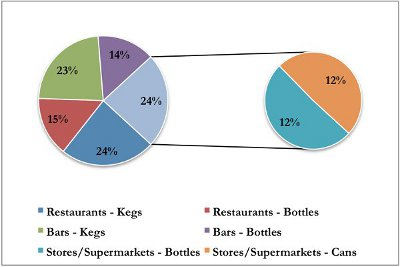

Of the 32 million liters of beer consumed last year, sources indicate that 90% were ales, 5% were lagers, and 5% were stouts. If these sources are correct, then 28.8 million liters of ale, 1.6 million liters of lager, and 1.6 million liters of stout were purchased and consumed last year. You remember that the market reports you purchased last year suggested that the market would begin to shift towards the consumption of lagers and stouts, but at what rate and over what length of time you do not know. However, you can be fairly confident that there will be less than 28.8 million liters of ale consumed this year, with the difference leading to an increase in the lager and stout market segments.
As you get ready to enter the market, perhaps one of the most important things to do is prepare a production forecast. This implies determining how many liters of beer you are going to produce, which is determined by how many cycles per machine will be run during the year. In order to develop your production forecast, you decide to create best-case and worst-case scenarios in terms of market share for a new brewer. The two factors you focus on the most are the amount of competition and the overall growth prospects for each market category. You have found that there are many competing producers of ale, which can be expected given the fact that ales have dominated the beer market for many years. While there are many competitors, there is no clear leader; the largest producer controls only 20% of the market. You consider this to be positive, since it would be much more difficult to penetrate the market if one competitor controlled upwards of 50% of the total supply. However, market forecasts suggest there is little room for growth in the ale market (beyond the inflation rate). In fact, all the reports suggested a decline in ale consumption over the next ten years. Conversely, the lager market has much less competition and higher prospects for growth.
Each one of your beer machines can brew 100,000 liters per cycle. If demand for beer in the coming year were to remain at 32 million liters, 100,000 liters would represent 0.3% of the market. After running some different forecast models, you believe that you could expect to capture 2-6% of the ale market and 5-11% of the lager market. However, your penetration rate will depend on how skillful you are marketing and promoting your product, how well you forecast consumer preference for packaging, and the way the overall beer market goes with respect to ales, lagers, and stouts. You need to decide which machines you are going to run this year and how many cycles would need to be brewed to represent a reasonable market share for your products.
Once you have determined how much beer will be produced in the coming year, it is time to decide on the split between packaging options. Your local Chamber of Commerce recently reported that citizens of Megapolis continue to enjoy a reasonably high standard of living and tend to eat out at restaurants and bars frequently. As you were doing some research on the internet, you came across the following chart that illustrates the breakdown of consumer purchasing patterns depending on where they consumed beer. Though it is a few years old, the report seems to be from a good source and you have no reason to believe that there have been any dramatic changes in consumer behavior since then.

From your own experience as a consumer, your preferences run similar to the chart above with one exception: you tend to prefer lagers from a keg or bottle, rather than a can. You read in a beer trade magazine that the aluminum in can packaging does not keep lager’s freshness as well as kegs and bottles. As a result, lager from cans tends to taste very different than the same lager from kegs or bottles. There is no discernable difference in the taste of ales between kegs, cans, and bottles, though. This leads you to believe that the chart above might serve as a good starting point for deciding on how to package your beer.
One aspect you need to consider is that you are a new competitor in the market and consumers will not be familiar with your beer. You need to think of every way possible to increase the amount of exposure to your product. While supermarkets and stores do have customers at all hours of the day, not all of them will pass by the beer section. Their staffs are also unlikely to promote your product themselves since they do not benefit by doing so. Further, most people go to supermarkets already knowing what it is they are going to purchase, which reduces the probability of them purchasing a product they are not familiar with. Aside from supermarkets and stores, the other large purchasing groups for beer are restaurants and bars. If you were to sell your kegs to restaurants at a slightly reduced price, the managers and staff might try harder to sell your product to patrons. Based on the data above, you need to decide how you will divide your beer output between kegs, bottles, and/or cans.